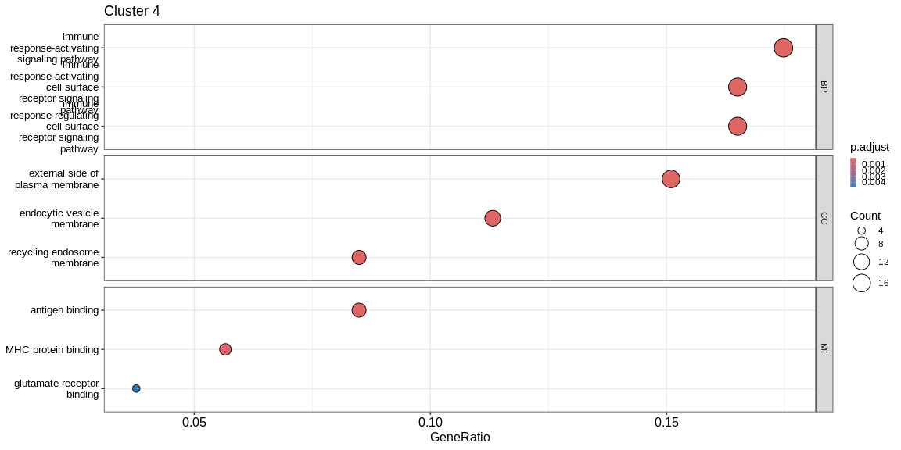
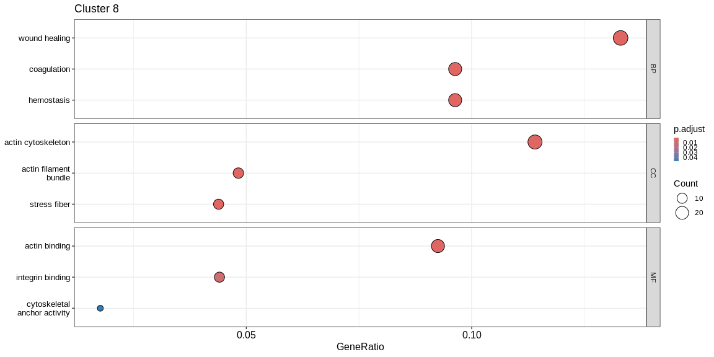
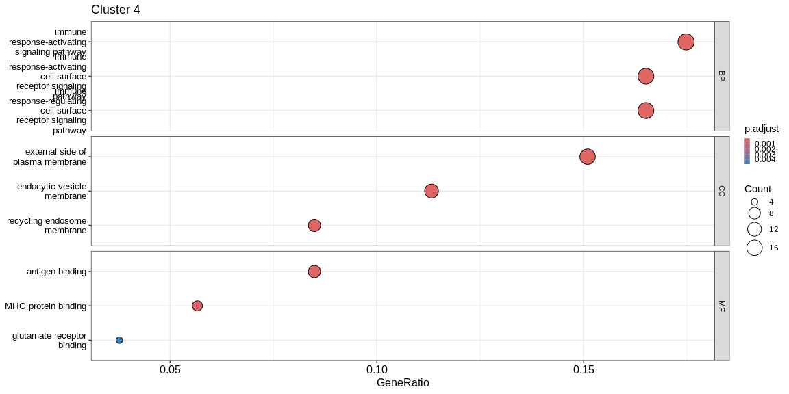
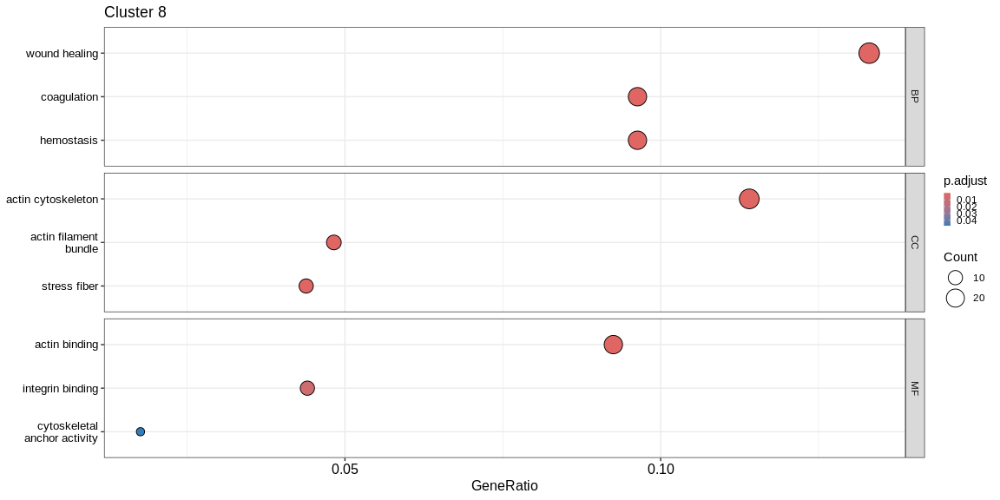
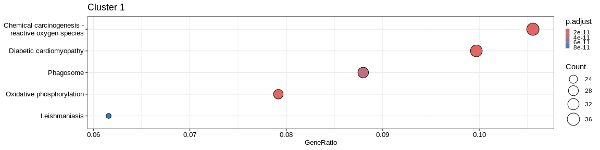
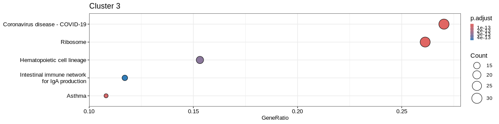
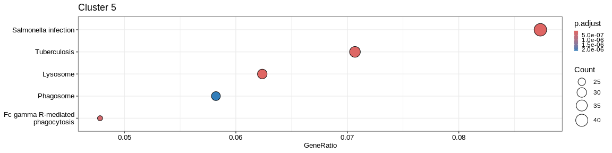

Over-representation analysis¶
Gene Ontology¶
We will start by analysing our gene lists with the Gene Ontology annotation which classifies genes into gene sets according to three main types of information:
- Molecular Function (MF): protein activity of the gene product
- Biological Process (BP): set of protein activities leading to a common task
- Cellular Component (CC): location of the gene product
Each set of genes is called a gene set and is grouped according to Gene Ontology terms (referred to here as GO terms). The GO terms are classified in a tree structure with general gene sets that become more specific as we go along. The relationships between GO terms can reflect different cases:
is a: A GO term is a subtype of the GO term B. For example mitochondrionis aorganelle.part of: the term GO A is part of the term GO B, so if the term GO A is present then so is the term GO B. For example mitochondrion is apart ofcytoplasm.has part: the term GO A necessarily contains the term GO B, but if there is the term GO B there is not necessarily the term GO A. For example, the receptor tyrosine kinase activityhas partATP hydrolysis activity.regulates: the term GO A necessarily impacts the term GO B, but the latter is not necessarily impacted by A.
In the ClusterProfiler package we will use the enrichGO function which
calculates for each GO term the over-representation of the genes in the
analysed cluster among those in the term.
To use the Gene Ontology database, we use an R package containing all the
annotation of the desired organism. These packages are called OrgDb which
can be found in the form org.[Genome Initials].eg.db (for the human
annotation, the OrgDb is org.Hs.eg.db). They contain gene identifiers
from different resources (NCBI, Ensembl, RefSeq, etc...) with annotation
from different databases (GO, OMIM, PMID, Uniprot, etc...). The default
gene identifiers are in the format entrez (which is a sequence of
numbers). Since we only have the Ensembl identifiers or the gene name
available to us, we will use the keyType parameter of the enrichGO
function to use the gene names instead of the entrez identifiers and thus
use the different information contained in the Org.Db.
## What's inside an organism database ?
ls("package:org.Hs.eg.db")
## You must see the help section of category you want to know about and don't hesite to test the examples to understand the architecture
?org.Hs.egENSEMBL #Link between ensembl ID and entrez ID
?org.Hs.egSYMBOL2EG #Link between entrez ID and gene name
?org.Hs.egSYMBOL #Link between gene name and entrez ID
?org.Hs.egGENENAME #Beware ! It concern gene description and not gene name as we know
## Different available mapping variable name
columns(org.Hs.eg.db)
We will therefore apply the enrichGO function for each clusters through
a lapply. For each cluster :
- We filter the marker result dataframe to retrieve only the rows concerning the genes overexpressed by the cluster cells.
- We run the
enrichGOfunction to obtain the GO terms (BP, CC and MF) enriched in the marker gene set. - Add the cluster name in a new column to the resulting dataframe
- We visualize the results with the
dotplotfunction of theenrichRpackage which allows to visualize the first 3 GO terms for each ontology type
The result of the lapply is a list where each element of the list is a
resultant dataframe for each cluster. We then assemble the results with
the do.call function which applies a function to the whole list. The
rbind will concatenate the rows of all the elements in the list so that
there is only one dataframe with the results for each cluster.
## GO enrichment for all clusters
enrich_go_list <- lapply(levels(pbmc_markers_signif$cluster), function(cluster_name){
res_markers <- subset(pbmc_markers_signif, cluster == cluster_name & avg_log2FC > 0) #Filter markers to retrieve only positive markers for the specific cluster
ego <- enrichGO(gene = res_markers$external_gene_name, #Vector of target genes
universe = unique(annotated_hg19$external_gene_name), #Vector of reference genes (all genes from the differential analysis)
OrgDb = "org.Hs.eg.db", #Organisme database
keyType = "SYMBOL", #Column name of the OrgDB that convert gene format in `gene`parameter to entrez ID
ont = "ALL") #What category of GO you want to analyse (BP, CC, MF or ALL)
ego@result$cluster <- cluster_name #Add cluster name in a new column named "cluster"
## visualisation
### don't forget to add print when inside a function/loop/lapply
print(dotplot(ego, #enrichResult object
split = "ONTOLOGY", #Do separated plot for each ontology type (only valable fo GO results)
showCategory = 3, #Only show first three categories
label_format = 20,
title = paste("Cluster", cluster_name)) + #Add title
facet_grid(ONTOLOGY~., scales = "free_y") + #Create subplot according to type used with `split = "ONTOLOGY"`
theme(axis.text.y = element_text(size = 10),
legend.key.size = unit(0.2, 'cm'))) #Reduce ontology labels names
return(ego@result)
})
 

enrich_go <- do.call("rbind", enrich_go_list) #Bind all results together
enrich_go <- enrich_go %>%
group_by(cluster, ONTOLOGY) #Rearrange df according to cluster and ontology type
## show first results
kable(slice_max(
enrich_go,
n = 3,
order_by = Count,
with_ties = FALSE)[,-9]
) #Only remove list of genes for the visualisation
First Enriched GO terms for each cluster
| ONTOLOGY | ID | Description | GeneRatio | BgRatio | pvalue | p.adjust | qvalue | Count | cluster |
|---|---|---|---|---|---|---|---|---|---|
| BP | cytoplasmic translation | 70/185 | 150/16049 | 0.0000000 | 0.0000000 | 0.0000000 | 70 | 0 | |
| BP | ribonucleoprotein complex biogenesis | 40/185 | 438/16049 | 0.0000000 | 0.0000000 | 0.0000000 | 40 | 0 | |
| BP | ribosome biogenesis | 36/185 | 297/16049 | 0.0000000 | 0.0000000 | 0.0000000 | 36 | 0 | |
| CC | ribosome | 72/189 | 224/16891 | 0.0000000 | 0.0000000 | 0.0000000 | 72 | 0 | |
| CC | cytosolic ribosome | 70/189 | 110/16891 | 0.0000000 | 0.0000000 | 0.0000000 | 70 | 0 | |
| CC | ribosomal subunit | 70/189 | 178/16891 | 0.0000000 | 0.0000000 | 0.0000000 | 70 | 0 | |
| MF | structural constituent of ribosome | 68/188 | 159/16507 | 0.0000000 | 0.0000000 | 0.0000000 | 68 | 0 | |
| MF | mRNA binding | 17/188 | 318/16507 | 0.0000001 | 0.0000111 | 0.0000099 | 17 | 0 | |
| MF | rRNA binding | 16/188 | 59/16507 | 0.0000000 | 0.0000000 | 0.0000000 | 16 | 0 | |
| BP | positive regulation of defense response | 52/539 | 437/16049 | 0.0000000 | 0.0000000 | 0.0000000 | 52 | 1 | |
| BP | generation of precursor metabolites and energy | 52/539 | 447/16049 | 0.0000000 | 0.0000000 | 0.0000000 | 52 | 1 | |
| BP | immune response-regulating signaling pathway | 49/539 | 440/16049 | 0.0000000 | 0.0000000 | 0.0000000 | 49 | 1 | |
| CC | secretory granule lumen | 52/550 | 314/16891 | 0.0000000 | 0.0000000 | 0.0000000 | 52 | 1 | |
| CC | cytoplasmic vesicle lumen | 52/550 | 317/16891 | 0.0000000 | 0.0000000 | 0.0000000 | 52 | 1 | |
| CC | vesicle lumen | 52/550 | 318/16891 | 0.0000000 | 0.0000000 | 0.0000000 | 52 | 1 | |
| MF | actin binding | 32/540 | 424/16507 | 0.0000105 | 0.0006036 | 0.0005298 | 32 | 1 | |
| MF | molecular function inhibitor activity | 32/540 | 474/16507 | 0.0000921 | 0.0031247 | 0.0027424 | 32 | 1 | |
| MF | amide binding | 28/540 | 368/16507 | 0.0000323 | 0.0014190 | 0.0012454 | 28 | 1 | |
| BP | regulation of lymphocyte activation | 36/213 | 484/16049 | 0.0000000 | 0.0000000 | 0.0000000 | 36 | 2 | |
| BP | mononuclear cell differentiation | 32/213 | 471/16049 | 0.0000000 | 0.0000000 | 0.0000000 | 32 | 2 | |
| BP | lymphocyte differentiation | 31/213 | 421/16049 | 0.0000000 | 0.0000000 | 0.0000000 | 31 | 2 | |
| CC | ribosome | 27/224 | 224/16891 | 0.0000000 | 0.0000000 | 0.0000000 | 27 | 2 | |
| CC | focal adhesion | 26/224 | 411/16891 | 0.0000000 | 0.0000000 | 0.0000000 | 26 | 2 | |
| CC | cell-substrate junction | 26/224 | 420/16891 | 0.0000000 | 0.0000000 | 0.0000000 | 26 | 2 | |
| MF | structural constituent of ribosome | 24/220 | 159/16507 | 0.0000000 | 0.0000000 | 0.0000000 | 24 | 2 | |
| MF | molecular function inhibitor activity | 16/220 | 474/16507 | 0.0006378 | 0.0293565 | 0.0253015 | 16 | 2 | |
| MF | cadherin binding | 13/220 | 309/16507 | 0.0002675 | 0.0237934 | 0.0205069 | 13 | 2 | |
| BP | cytoplasmic translation | 31/171 | 150/16049 | 0.0000000 | 0.0000000 | 0.0000000 | 31 | 3 | |
| BP | adaptive immune response | 29/171 | 449/16049 | 0.0000000 | 0.0000000 | 0.0000000 | 29 | 3 | |
| BP | B cell activation | 27/171 | 265/16049 | 0.0000000 | 0.0000000 | 0.0000000 | 27 | 3 | |
| CC | ribosome | 29/178 | 224/16891 | 0.0000000 | 0.0000000 | 0.0000000 | 29 | 3 | |
| CC | cytosolic ribosome | 28/178 | 110/16891 | 0.0000000 | 0.0000000 | 0.0000000 | 28 | 3 | |
| CC | ribosomal subunit | 28/178 | 178/16891 | 0.0000000 | 0.0000000 | 0.0000000 | 28 | 3 | |
| MF | structural constituent of ribosome | 29/170 | 159/16507 | 0.0000000 | 0.0000000 | 0.0000000 | 29 | 3 | |
| MF | peptide binding | 16/170 | 295/16507 | 0.0000001 | 0.0000029 | 0.0000027 | 16 | 3 | |
| MF | amide binding | 16/170 | 368/16507 | 0.0000013 | 0.0000496 | 0.0000464 | 16 | 3 | |
| BP | adaptive immune response | 27/103 | 449/16049 | 0.0000000 | 0.0000000 | 0.0000000 | 27 | 4 | |
| BP | leukocyte mediated immunity | 23/103 | 377/16049 | 0.0000000 | 0.0000000 | 0.0000000 | 23 | 4 | |
| BP | regulation of lymphocyte activation | 23/103 | 484/16049 | 0.0000000 | 0.0000000 | 0.0000000 | 23 | 4 | |
| CC | external side of plasma membrane | 16/106 | 372/16891 | 0.0000000 | 0.0000001 | 0.0000001 | 16 | 4 | |
| CC | early endosome | 13/106 | 399/16891 | 0.0000013 | 0.0000229 | 0.0000179 | 13 | 4 | |
| CC | endocytic vesicle membrane | 12/106 | 194/16891 | 0.0000000 | 0.0000002 | 0.0000001 | 12 | 4 | |
| MF | antigen binding | 9/106 | 62/16507 | 0.0000000 | 0.0000001 | 0.0000000 | 9 | 4 | |
| MF | peptide binding | 8/106 | 295/16507 | 0.0006277 | 0.0146499 | 0.0128414 | 8 | 4 | |
| MF | amide binding | 8/106 | 368/16507 | 0.0025574 | 0.0374167 | 0.0327978 | 8 | 4 | |
| BP | immune response-regulating signaling pathway | 68/757 | 440/16049 | 0.0000000 | 0.0000000 | 0.0000000 | 68 | 5 | |
| BP | activation of immune response | 68/757 | 482/16049 | 0.0000000 | 0.0000000 | 0.0000000 | 68 | 5 | |
| BP | immune response-activating signaling pathway | 63/757 | 415/16049 | 0.0000000 | 0.0000000 | 0.0000000 | 63 | 5 | |
| CC | vacuolar membrane | 65/781 | 448/16891 | 0.0000000 | 0.0000000 | 0.0000000 | 65 | 5 | |
| CC | secretory granule membrane | 63/781 | 299/16891 | 0.0000000 | 0.0000000 | 0.0000000 | 63 | 5 | |
| CC | cytoplasmic vesicle lumen | 61/781 | 317/16891 | 0.0000000 | 0.0000000 | 0.0000000 | 61 | 5 | |
| MF | actin binding | 54/770 | 424/16507 | 0.0000000 | 0.0000000 | 0.0000000 | 54 | 5 | |
| MF | actin filament binding | 32/770 | 202/16507 | 0.0000000 | 0.0000005 | 0.0000004 | 32 | 5 | |
| MF | cadherin binding | 32/770 | 309/16507 | 0.0000211 | 0.0028534 | 0.0025270 | 32 | 5 | |
| BP | adaptive immune response | 43/262 | 449/16049 | 0.0000000 | 0.0000000 | 0.0000000 | 43 | 6 | |
| BP | leukocyte mediated immunity | 41/262 | 377/16049 | 0.0000000 | 0.0000000 | 0.0000000 | 41 | 6 | |
| BP | regulation of lymphocyte activation | 37/262 | 484/16049 | 0.0000000 | 0.0000000 | 0.0000000 | 37 | 6 | |
| CC | focal adhesion | 29/269 | 411/16891 | 0.0000000 | 0.0000000 | 0.0000000 | 29 | 6 | |
| CC | cell-substrate junction | 29/269 | 420/16891 | 0.0000000 | 0.0000000 | 0.0000000 | 29 | 6 | |
| CC | external side of plasma membrane | 25/269 | 372/16891 | 0.0000000 | 0.0000001 | 0.0000001 | 25 | 6 | |
| MF | actin binding | 20/268 | 424/16507 | 0.0000210 | 0.0021638 | 0.0019775 | 20 | 6 | |
| MF | actin filament binding | 15/268 | 202/16507 | 0.0000011 | 0.0001900 | 0.0001736 | 15 | 6 | |
| MF | immune receptor activity | 10/268 | 141/16507 | 0.0001028 | 0.0067171 | 0.0061389 | 10 | 6 | |
| BP | regulation of lymphocyte activation | 43/373 | 484/16049 | 0.0000000 | 0.0000000 | 0.0000000 | 43 | 7 | |
| BP | adaptive immune response | 40/373 | 449/16049 | 0.0000000 | 0.0000000 | 0.0000000 | 40 | 7 | |
| BP | positive regulation of leukocyte activation | 37/373 | 359/16049 | 0.0000000 | 0.0000000 | 0.0000000 | 37 | 7 | |
| CC | vacuolar membrane | 30/388 | 448/16891 | 0.0000002 | 0.0000041 | 0.0000035 | 30 | 7 | |
| CC | lysosomal membrane | 29/388 | 407/16891 | 0.0000001 | 0.0000024 | 0.0000020 | 29 | 7 | |
| CC | lytic vacuole membrane | 29/388 | 407/16891 | 0.0000001 | 0.0000024 | 0.0000020 | 29 | 7 | |
| MF | amide binding | 23/382 | 368/16507 | 0.0000168 | 0.0016856 | 0.0015624 | 23 | 7 | |
| MF | immune receptor activity | 20/382 | 141/16507 | 0.0000000 | 0.0000000 | 0.0000000 | 20 | 7 | |
| MF | peptide binding | 20/382 | 295/16507 | 0.0000188 | 0.0016856 | 0.0015624 | 20 | 7 | |
| BP | wound healing | 29/218 | 403/16049 | 0.0000000 | 0.0000000 | 0.0000000 | 29 | 8 | |
| BP | blood coagulation | 21/218 | 221/16049 | 0.0000000 | 0.0000000 | 0.0000000 | 21 | 8 | |
| BP | coagulation | 21/218 | 225/16049 | 0.0000000 | 0.0000000 | 0.0000000 | 21 | 8 | |
| CC | actin cytoskeleton | 26/228 | 475/16891 | 0.0000000 | 0.0000001 | 0.0000001 | 26 | 8 | |
| CC | cell-substrate junction | 22/228 | 420/16891 | 0.0000001 | 0.0000022 | 0.0000019 | 22 | 8 | |
| CC | focal adhesion | 21/228 | 411/16891 | 0.0000002 | 0.0000062 | 0.0000053 | 21 | 8 | |
| MF | actin binding | 21/227 | 424/16507 | 0.0000004 | 0.0002070 | 0.0001890 | 21 | 8 | |
| MF | integrin binding | 10/227 | 144/16507 | 0.0000305 | 0.0073768 | 0.0067362 | 10 | 8 | |
| MF | cytoskeletal anchor activity | 4/227 | 24/16507 | 0.0002981 | 0.0479966 | 0.0438282 | 4 | 8 |
The result is a dataframe where the GO terms have been considered as enriched:
ONTOLOGY: ontology type (BP, CC, or MF)ID: Unique identifier of the GO termDescription: Description of the GO termGeneRatio: Fraction representing the number of marker genes present in the GO term, \(GeneRatio = \frac{nbrMarkerGeneInKEGGcat}{nbrMarkerGene}\).BgRatio: Fraction representing the number of reference genes present in the GO term, \(BgRatio = \frac{nbrTotalGeneInKEGGcat}{nbrTotalGene}\).pvalue: p-value of the enrichment testp.adjust: adjusted p-value of the Benjamini Hochberg testqvalue: q-value after FDR (False Discovery Rate) checkgeneID: String containing the list of marker genes present in the GO term (separated by/)count: Number of marker genes present in the GO termcluster: Column added before thedo.call("rbind", list)to identify in which cluster the GO term has been considered as enriched.
A GO term has been considered as enriched if :
- the p-value \(\lt\) 0.05
- the adjusted p-value \(\lt\) 0.05
- the q-value \(\lt\) 0.2
Kyoto Encyclopedia of Genes and Genomes (KEGG)¶
KEGG is a database that focuses on the molecular annotation of the different metabolic pathways. It allows the description of the biochemical reactions that compose the pathway. KEGG also allows the visualization of these pathways through hand-drawn maps representing the different reactions and the relationship between the genes. There are several main categories of KEGG pathways:
- Metabolism
- Genetic information processing
- Environmental information processing
- Cellular processes
- Organ systems
- Human diseases
- Drug development
We will use the enrichKEGG function from the ClusterProfiler package.
This function doesn't work exactly like enrichGO because it calls directly
on the database and doesn't use an Orgdb package but it does require our
genes to be annotated with an entrez id. We will have to find another way
to convert our genes into the correct format.
To do this, we will use the Orgdb or org.Hs.egSYMBOL object to list
each enter id as its "gene symbol" (gene name). When we convert this object
to a dataframe we get a table with two columns (gene_id and symbol).
We now have the possibility to switch from a gene name to an entrez id.
We will therefore apply the enrichKEGG function for each clusters
through a lapply. For each cluster :
- We filter the marker result dataframe to retrieve only the rows concerning the genes overexpressed by the cluster cells.
- Run the
enrichGOfunction to get the enriched KEGG terms in the marker gene set, filter our enter/symbol mapping table for thegeneanduniverseparameters with the gene names contained in the marker and biomart annotation tables. - Add the cluster name in a new column to the resulting dataframe
- We visualize the results with the
dotplotfunction of theenrichRpackage which allows to visualize the first 5 KEGG terms
## Retrieve a corresponding table between entrez id and gene name (called gene symbol in org.db)
corresp_entrez <- as.data.frame(org.Hs.egSYMBOL) #Change format to df
## Apply enrichKEGG for each cluster
enrich_kegg_list <- lapply(levels(pbmc_markers_signif$cluster), function(cluster_name){
res_markers <- subset(pbmc_markers_signif, cluster == cluster_name & avg_log2FC > 0) #Filter markers dataframe based on cluster
## Perform enrichKEGG analysis
ekegg <- enrichKEGG(gene = subset(corresp_entrez, symbol %in% res_markers$external_gene_name)$gene_id, #Genes to analyse
universe = subset(corresp_entrez, symbol %in% unique(annotated_hg19$external_gene_name))$gene_id, #Background genes, here we take all genes from our expression matrix
organism = "hsa")
ekegg@result$cluster <- cluster_name #Add cluster name as column
## Add plot
print(dotplot(ekegg,
label_format = 30,
font.size = 10,
showCategory = 5,
title = paste("Cluster", cluster_name)) +
theme(axis.text.y = element_text(size = 10),
legend.key.size = unit(0.2, 'cm')))
return(ekegg@result) #Return dataframe result
})

## Concatenate all results in one dataframe
enrich_kegg <- do.call("rbind", enrich_kegg_list)
## Group result by cluster (easier to manipulate with dplyr)
enrich_kegg <- enrich_kegg %>%
group_by(cluster)
## Visualise first 3 KEGG categories for each cluster (removing the vector of genes just for the visualisation)
kable(slice_max(
enrich_kegg,
n = 3,
order_by = Count,
with_ties = FALSE)[,-8]
)
First Enriched KEGG categories for each cluster
| category | subcategory | ID | Description | GeneRatio | BgRatio | pvalue | qvalue | geneID | Count | cluster |
|---|---|---|---|---|---|---|---|---|---|---|
| Human Diseases | Infectious disease: viral | hsa05171 | Coronavirus disease - COVID-19 | 69/131 | 227/7983 | 0.0000000 | 0.0000000 | 3725/3921/4736/6122/6124/6125/6128/6129/6130/6133/6134/6135/6136/6137/6138/6139/6141/6142/6143/6144/6146/6147/6152/6155/6156/6157/6160/6161/6164/6165/6167/6168/6169/6173/6175/6176/6181/6187/6188/6189/6191/6192/6193/6194/6202/6203/6204/6206/6207/6208/6209/6210/6217/6222/6223/6224/6227/6228/6230/6231/6232/6233/6234/6235/9045/9349/11224/23521/25873 | 69 | 0 |
| Genetic Information Processing | Translation | hsa03010 | Ribosome | 68/131 | 134/7983 | 0.0000000 | 0.0000000 | 3921/4736/6122/6124/6125/6128/6129/6130/6133/6134/6135/6136/6137/6138/6139/6141/6142/6143/6144/6146/6147/6152/6155/6156/6157/6160/6161/6164/6165/6167/6168/6169/6173/6175/6176/6181/6187/6188/6189/6191/6192/6193/6194/6202/6203/6204/6206/6207/6208/6209/6210/6217/6222/6223/6224/6227/6228/6230/6231/6232/6233/6234/6235/9045/9349/11224/23521/25873 | 68 | 0 |
| Organismal Systems | Immune system | hsa04640 | Hematopoietic cell lineage | 9/131 | 94/7983 | 0.0000215 | 0.0009710 | 914/915/916/917/921/924/926/2323/3575 | 9 | 0 |
| Human Diseases | Cancer: overview | hsa05208 | Chemical carcinogenesis - reactive oxygen species | 36/341 | 196/7983 | 0.0000000 | 0.0000000 | 292/293/873/1327/1329/1340/1351/1535/1537/2885/3162/4257/4688/4695/4707/4716/4726/4731/4792/5580/5879/6390/6648/7384/7386/9377/9446/10105/10327/10975/29796/51079/54539/126328/374291/653361 | 36 | 1 |
| Human Diseases | Neurodegenerative disease | hsa05022 | Pathways of neurodegeneration - multiple diseases | 36/341 | 443/7983 | 0.0001337 | 0.0008218 | 292/293/637/1327/1329/1340/1351/1460/1536/1537/2876/3553/4695/4707/4716/4726/4731/5688/5691/5879/6390/7132/7133/7384/7386/8878/9246/9377/10105/10975/23401/29796/51079/54539/126328/374291 | 36 | 1 |
| Human Diseases | Cardiovascular disease | hsa05415 | Diabetic cardiomyopathy | 34/341 | 175/7983 | 0.0000000 | 0.0000000 | 292/293/948/1327/1329/1340/1351/1509/1535/1536/1537/2597/4688/4689/4695/4707/4716/4726/4731/5580/5879/6390/7040/7384/7386/9377/10105/10975/29796/51079/54539/126328/374291/653361 | 34 | 1 |
| Human Diseases | Infectious disease: viral | hsa05171 | Coronavirus disease - COVID-19 | 26/131 | 227/7983 | 0.0000000 | 0.0000000 | 2353/3725/3921/6122/6139/6147/6156/6157/6160/6166/6173/6175/6188/6201/6204/6206/6210/6222/6224/6227/6230/6233/6235/6772/9045/25873 | 26 | 2 |
| Genetic Information Processing | Translation | hsa03010 | Ribosome | 23/131 | 134/7983 | 0.0000000 | 0.0000000 | 3921/6122/6139/6147/6156/6157/6160/6166/6173/6175/6188/6201/6204/6206/6210/6222/6224/6227/6230/6233/6235/9045/25873 | 23 | 2 |
| Human Diseases | Infectious disease: bacterial | hsa05132 | Salmonella infection | 17/131 | 244/7983 | 0.0000004 | 0.0000154 | 71/330/399/2353/3320/3725/6188/6281/6500/6932/6990/7277/7295/8717/10627/51176/103910 | 17 | 2 |
| Human Diseases | Infectious disease: viral | hsa05171 | Coronavirus disease - COVID-19 | 30/112 | 227/7983 | 0.0000000 | 0.0000000 | 2197/3921/4736/5579/6125/6132/6133/6136/6138/6141/6142/6144/6147/6155/6159/6167/6168/6189/6193/6202/6205/6207/6222/6223/6227/6228/6232/11224/23521/200916 | 30 | 3 |
| Genetic Information Processing | Translation | hsa03010 | Ribosome | 29/112 | 134/7983 | 0.0000000 | 0.0000000 | 2197/3921/4736/6125/6132/6133/6136/6138/6141/6142/6144/6147/6155/6159/6167/6168/6189/6193/6202/6205/6207/6222/6223/6227/6228/6232/11224/23521/200916 | 29 | 3 |
| Organismal Systems | Immune system | hsa04640 | Hematopoietic cell lineage | 17/112 | 94/7983 | 0.0000000 | 0.0000000 | 930/931/933/951/2208/3108/3109/3112/3113/3115/3117/3118/3119/3122/3123/3127/3566 | 17 | 3 |
| Organismal Systems | Immune system | hsa04650 | Natural killer cell mediated cytotoxicity | 15/73 | 125/7983 | 0.0000000 | 0.0000000 | 919/2534/3002/3105/3106/3107/3133/3824/3932/4068/5551/7535/10870/27040/259197 | 15 | 4 |
| Human Diseases | Infectious disease: viral | hsa05170 | Human immunodeficiency virus 1 infection | 12/73 | 204/7983 | 0.0000003 | 0.0000032 | 567/801/915/916/917/919/3105/3106/3107/3133/3134/60489 | 12 | 4 |
| Organismal Systems | Immune system | hsa04660 | T cell receptor signaling pathway | 11/73 | 117/7983 | 0.0000000 | 0.0000001 | 915/916/917/919/925/926/2534/3932/5527/7535/27040 | 11 | 4 |
| Human Diseases | Neurodegenerative disease | hsa05022 | Pathways of neurodegeneration - multiple diseases | 49/481 | 443/7983 | 0.0000208 | 0.0002333 | 292/293/581/637/805/808/847/1020/1329/1337/1340/1347/1351/1460/1536/4218/4701/4709/4711/4717/5579/5594/5606/5663/5685/5688/5691/5692/5701/5702/5710/5715/5879/7132/7133/7384/7386/7416/7846/9246/9377/10010/10121/10376/29796/51079/51465/55062/55255 | 49 | 5 |
| Human Diseases | Infectious disease: bacterial | hsa05132 | Salmonella infection | 42/481 | 244/7983 | 0.0000000 | 0.0000000 | 60/302/387/388/391/581/834/837/2316/3071/4074/4615/5058/5216/5585/5594/5606/5878/5879/6237/6281/6934/6993/7132/7846/8655/8677/8743/10092/10094/10095/10097/10109/10121/10376/10552/25828/27128/29108/51143/55845/112574 | 42 | 5 |
| Human Diseases | Neurodegenerative disease | hsa05014 | Amyotrophic lateral sclerosis | 42/481 | 332/7983 | 0.0000031 | 0.0000601 | 60/581/637/834/847/1329/1337/1340/1347/1351/4218/4701/4709/4711/4717/5216/5606/5685/5688/5691/5692/5701/5702/5710/5715/5879/7132/7133/7384/7386/7416/7846/8021/9377/10010/10121/10376/29796/51079/55062/55255/400916 | 42 | 5 |
| Organismal Systems | Immune system | hsa04650 | Natural killer cell mediated cytotoxicity | 26/156 | 125/7983 | 0.0000000 | 0.0000000 | 356/919/2207/2214/3002/3105/3106/3107/3133/3458/3683/3689/3804/3812/3821/3824/4068/5551/5880/7305/7462/7535/10870/51744/117157/259197 | 26 | 6 |
| Human Diseases | Infectious disease: viral | hsa05163 | Human cytomegalovirus infection | 17/156 | 222/7983 | 0.0000014 | 0.0000328 | 356/567/801/811/2923/3105/3106/3107/3133/3716/5732/5880/6348/6351/6352/6890/54331 | 17 | 6 |
| Cellular Processes | Cell motility | hsa04810 | Regulation of actin cytoskeleton | 17/156 | 226/7983 | 0.0000018 | 0.0000329 | 60/71/1072/2934/3683/3689/3695/5216/5499/5880/10093/10096/10109/10627/10788/81873/103910 | 17 | 6 |
| Human Diseases | Infectious disease: bacterial | hsa05152 | Tuberculosis | 22/217 | 176/7983 | 0.0000000 | 0.0000000 | 637/972/2207/3108/3109/3111/3113/3115/3117/3118/3119/3122/3123/3127/3553/3606/4046/4261/5534/6850/7879/8844 | 22 | 7 |
| Organismal Systems | Immune system | hsa04640 | Hematopoietic cell lineage | 20/217 | 94/7983 | 0.0000000 | 0.0000000 | 911/912/945/1436/1438/2322/3108/3109/3111/3113/3115/3117/3118/3119/3122/3123/3127/3553/3563/3570 | 20 | 7 |
| Cellular Processes | Transport and catabolism | hsa04145 | Phagosome | 20/217 | 146/7983 | 0.0000000 | 0.0000001 | 60/71/3108/3109/3111/3113/3115/3117/3118/3119/3122/3123/3127/4688/5879/7879/10376/53407/83547/84617 | 20 | 7 |
| NA | NA | hsa04820 | Cytoskeleton in muscle cells | 12/125 | 230/7983 | 0.0002438 | 0.0100247 | 2026/2273/3674/3688/3690/3693/7125/7168/7171/9124/10398/23002 | 12 | 8 |
| Organismal Systems | Immune system | hsa04611 | Platelet activation | 11/125 | 122/7983 | 0.0000029 | 0.0005543 | 2811/2815/3674/3688/3690/4638/5742/6915/7450/51206/83706 | 11 | 8 |
| Cellular Processes | Cellular community - eukaryotes | hsa04510 | Focal adhesion | 11/125 | 198/7983 | 0.0002602 | 0.0100247 | 87/3611/3674/3688/3690/3693/4638/7450/10398/29780/56034 | 11 | 8 |
The result is a dataframe where KEGG categories have been considered as enriched with the following columns :
ID: Unique identifier of the KEGG categoryDescription: Description of the KEGG categoryGeneRatio: Fraction representing the number of marker genes present in the KEGG category, \(GeneRatio = \frac{nbrMarkerGeneInKEGGcat}{nbrMarkerGene}\)BgRatio: Fraction representing the number of genes of the reference present in the KEGG category, \(BgRatio = \frac{nbrTotalGeneInKEGGcat}{nbrTotalGene}\)pvalue: p-value of the enrichment testp.adjust: adjusted p-value of the Benjamini Hochberg testqvalue: q-value after FDR (False Discovery Rate) checkgeneID: String containing the list of marker genes present in the KEGG category (separated by/)Count: Number of marker genes present in the KEGG categorycluster: Column added before thedo.call("rbind", list)in order to identify in which cluster the KEGG category has been considered as enriched.
A KEGG category has been considered enriched if :
- the p-value \(\lt\) 0.05
- the adjusted p-value \(\lt\) 0.05
- q-value \(\lt\) 0.2
These over-representation methods are highly dependent on the database
containing fairly generalized groups of genes. However, we can see that
the results of enrichGO, enrichKEGG and Biomart intersect for some
clusters where :
- Cluster 6 would represent the Natural Killer cells as well as cluster 4: knowing that they are very close on the UMAP it reflects their proximity of the transcriptomes of the cells that compose these two clusters. The GO analysis would however lean more towards T cells for cluster 4.
- Cluster 8 would be composed of platelet cells
Knowing when taking only the first 3 or 5 results (so very restricted), we are extremely stringent in identifying clusters.